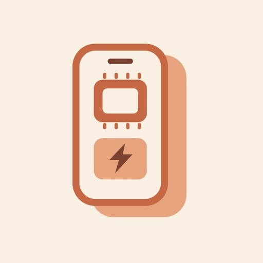

Inside: Revisa tu celular


Una forma cálida y clara de revisar todo tu celular: pruebas, hardware, batería, rendimiento y reloj de carga.
Revisión del iPhone
Comprueba pantalla táctil, cada objetivo, sonido, Face ID o Touch ID, botones, sensores, wifi, datos celulares, Bluetooth y carga. Parte es automática; tú pruebas el resto. La prueba de altavoz y micrófono reproduce cuatro tonos e indica las bandas débiles; la cámara puede avisar de una posible lente sucia. Lo que ninguna app lee (salud de la batería, historial de piezas, Buscar, IMEI y número de serie) lo introduces tú tras consultarlo en Ajustes; el informe lo marca así.
Revisión en 2 minutos e Inside Pro
Un toque lanza la revisión de 2 minutos. Los informes llevan ID y código QR. Inside Pro (mensual, anual con la primera semana gratis o de por vida) añade un PDF sin marca de agua con tu nombre, la tendencia de la batería, pruebas de pantalla, limpieza de fotos completa con recordatorio semanal, widgets de batería y estado del teléfono, tendencia de benchmarks, distribución de la clasificación, comparar dos informes, caja fuerte ilimitada, todos los estilos y sin anuncios; la revisión básica sigue gratis.
Liberar espacio
Busca fotos duplicadas, parecidas o borrosas, fotos RAW, vídeos en cámara lenta y time-lapse, ojos cerrados o caras borrosas, capturas, imágenes guardadas e ilustraciones, documentos, recibos y vídeos grandes. «Archivos grandes» lista los más pesados y duplicados de una carpeta; los contactos vacíos o duplicados se limpian y una guía ayuda a liberar más espacio.
Caja fuerte privada
Mueve fotos y vídeos a Inside, protegidos con Face ID. 20 gratis, ilimitada con Inside Pro.
Rendimiento, benchmarks y puntuación
Pruebas de CPU, GPU, almacenamiento e IA (Neural Engine, GPU, Apple Intelligence) y estrés de 3 minutos con estado térmico. Resultados publicables de forma anónima en una clasificación por modelo; si son lentos, se muestran las causas probables. La puntuación se basa sobre todo en la revisión (70 %) y requiere al menos el 80 % de ella; la CPU (30 %) solo se compara con este mismo dispositivo.
• Información de hardware y archivos de diagnóstico
Importa un registro de Analytics o sysdiagnose para ver ciclos, capacidad y otros datos del archivo. Lo disponible depende del archivo; los originales nunca se suben y los números de serie se ocultan.
Explorador 3D
Gira y desmonta un modelo con forma y colores oficiales de tu iPhone.
Reloj de carga
Con la app abierta, muestra hora, batería y animación de carga. Seis esferas son gratuitas; las demás van en paquetes que compras sueltos o con Inside Pro. El historial por sesiones y cargador se exporta en CSV. Al conectar suena un tono con animación de anillo.
Pantalla bloqueada y En reposo
Mientras carga, un toque muestra nivel inicial y tiempo de carga en la pantalla bloqueada y la Dynamic Island, con tu estilo de reloj. El widget Revisión del teléfono muestra los días desde tu última revisión; Inside Pro añade widgets de batería y estado.
iPhone Duo y Apple Watch
En el iPhone Duo, dos páginas separan resumen y revisiones. La app del Apple Watch prueba pantalla, táctil, Digital Crown, vibración, sonido y micrófono para el informe.
Inside es gratuita y muestra anuncios de banner. Al cerrar la imagen de un informe terminado puede aparecer un anuncio a pantalla completa, una vez al día como máximo; el de prueba solo si lo eliges. Inside Pro quita los anuncios; las compras anteriores siguen activas. Incluye En familia.
Sobre los datos: los valores que iOS no ofrece (temperatura de la CPU en tiempo real, salud de la batería de Ajustes, potencia de carga real y color del dispositivo) nunca se presentan como medidos. Los códigos desconocidos no se adivinan. Las revisiones solo registran esta sesión y tu criterio; no descartan fallos intermitentes ni desgaste y no son un diagnóstico de reparación.
Preguntas frecuentes
¿Hay alguna app gratuita que revise de una sola vez la pantalla, las cámaras, las bocinas y los micrófonos de un iPhone?
Sí. Inside ofrece una revisión paso a paso gratuita y una revisión rápida de 2 minutos que cubre pantalla y táctil, cada cámara, las bocinas, cada micrófono, Face ID o Touch ID, sensores, Wi-Fi, Bluetooth y carga, y guarda un informe que puedes conservar y compartir.
¿Cómo puedo saber si mi iPhone está cargando lento o rápido?
Mientras cargas, abre el reloj de carga de Inside: muestra si la carga es lenta, estándar o rápida, aproximadamente cuántos watts, y el tiempo hasta llegar al 80 %. En el historial puedes comparar las curvas de distintos cargadores. Estas funciones son gratuitas.
¿Cómo puedo ver el estado de la batería y el número de ciclos de carga de mi iPhone?
El estado de la batería se consulta en Ajustes › Batería. Inside puede importar el registro de diagnóstico Analytics del iPhone para leer el número de ciclos de carga y lo añade al informe de revisión; Inside Pro además muestra una tendencia de la salud de la batería.
¿Inside tiene costo?
La revisión básica, el reloj de carga y los informes son gratuitos. Inside Pro (mensual, anual con la primera semana gratis, o de por vida) agrega informes PDF sin marca de agua, tendencias de la batería y herramientas avanzadas.
El altavoz de mi iPhone suena bajo o el micrófono se escucha poco claro. ¿Cómo puedo revisarlo yo mismo?
La revisión paso a paso de Inside prueba el altavoz y cada micrófono con cuatro tonos de prueba, indica las bandas de frecuencia más débiles y también revisa los canales izquierdo y derecho. Los resultados se guardan en un informe que puedes comparar con la revisión anterior. Solo registra esta prueba y tu propio juicio; no es un diagnóstico de reparación.
Parte de la pantalla táctil de mi iPhone parece no responder. ¿Cómo puedo probarla?
La revisión paso a paso de Inside incluye pantalla, táctil y multitáctil, que tú operas y registras; la revisión rápida de 2 minutos también recorre la pantalla y el táctil. La revisión básica es gratuita.
Se me llenó el almacenamiento de mi iPhone. ¿Cómo encuentro fotos que pueda borrar?
La herramienta de liberar espacio de Inside encuentra fotos duplicadas, parecidas, borrosas y en ráfaga, capturas de pantalla y videos grandes, sugiere cuál conservar y solo borra lo que tú confirmes; la versión gratuita analiza las últimas 300 fotos.
App Store · 繁體中文 · English · 简体中文 · 日本語 · 한국어 · Français · Deutsch · Eason Wu Apps